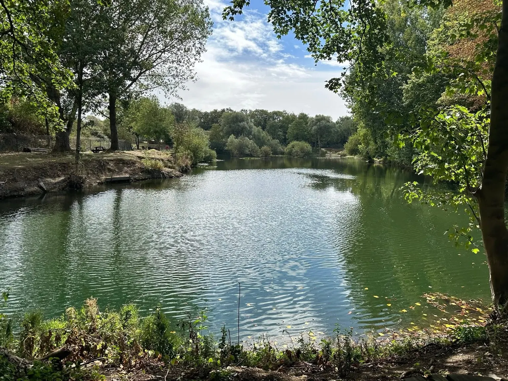
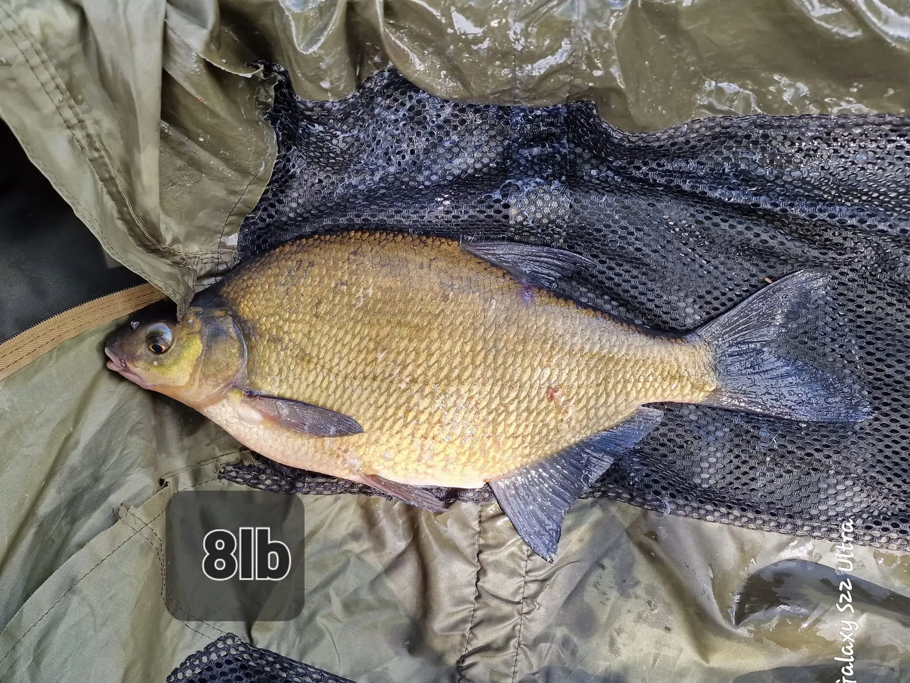
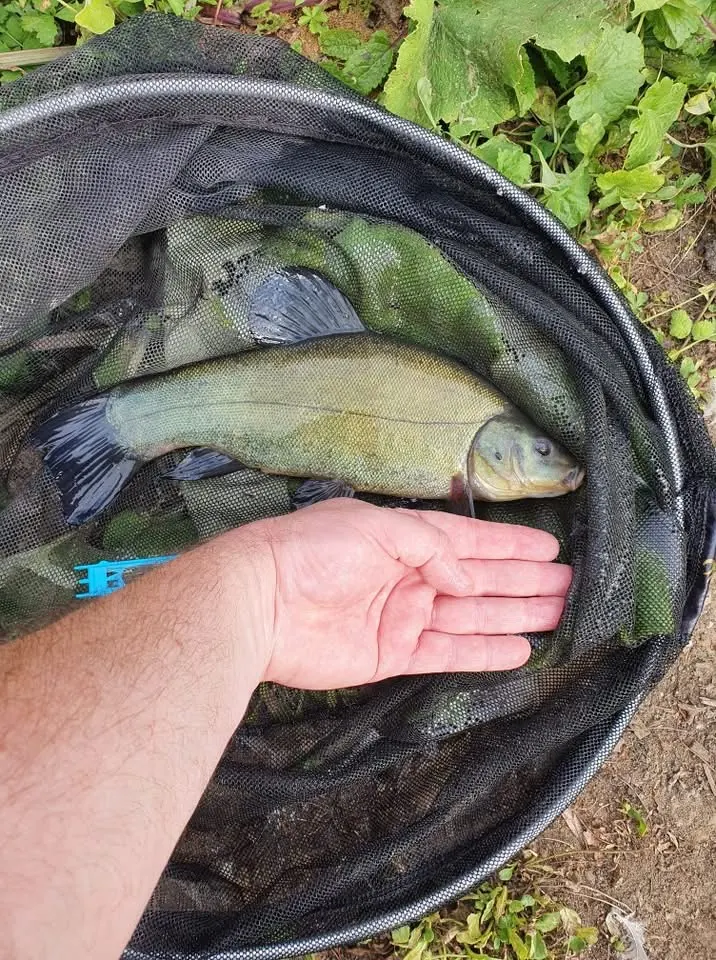
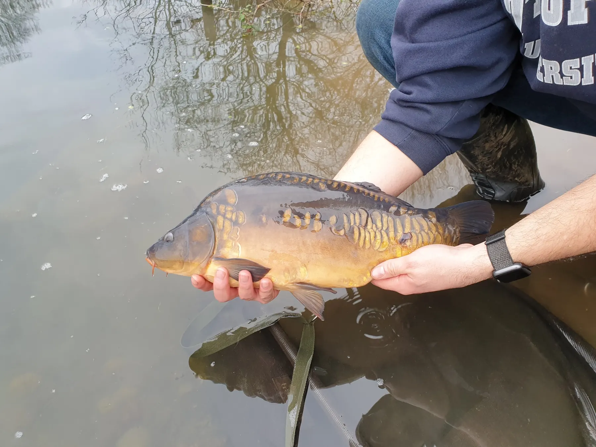
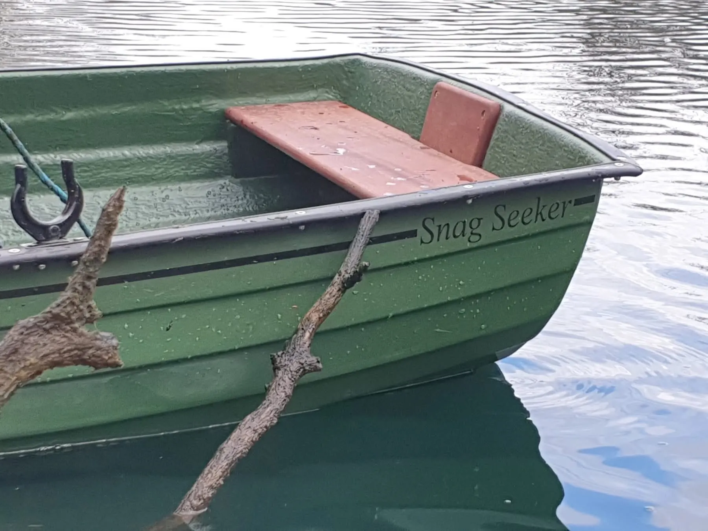
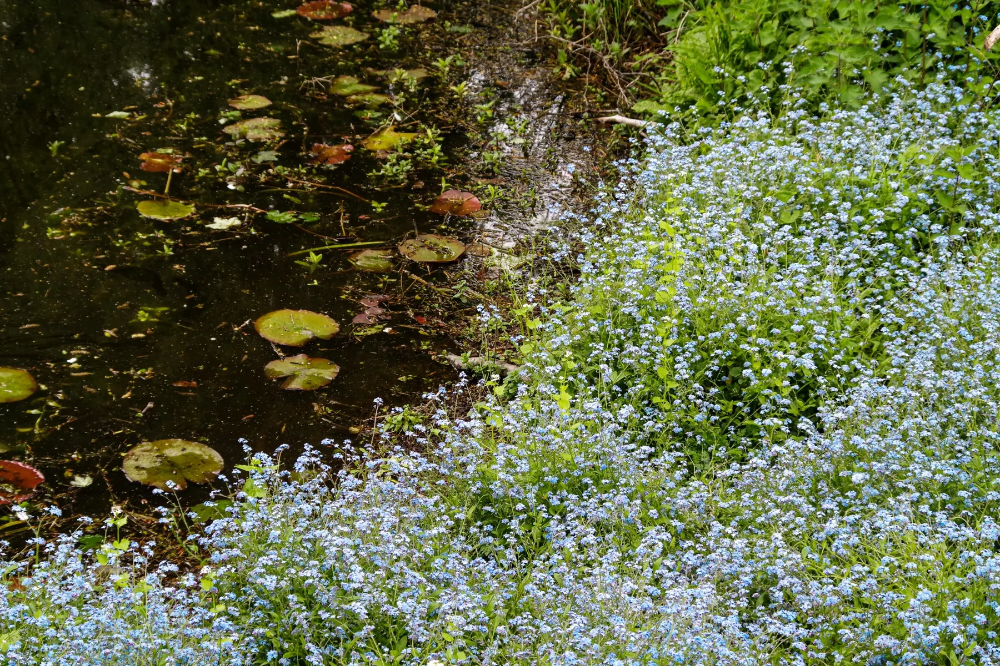

Gallery
Life at Plan B
The lake, its fish and the community effort that goes into caring for the fishery.











The lake, its fish and the community effort that goes into caring for the fishery.





